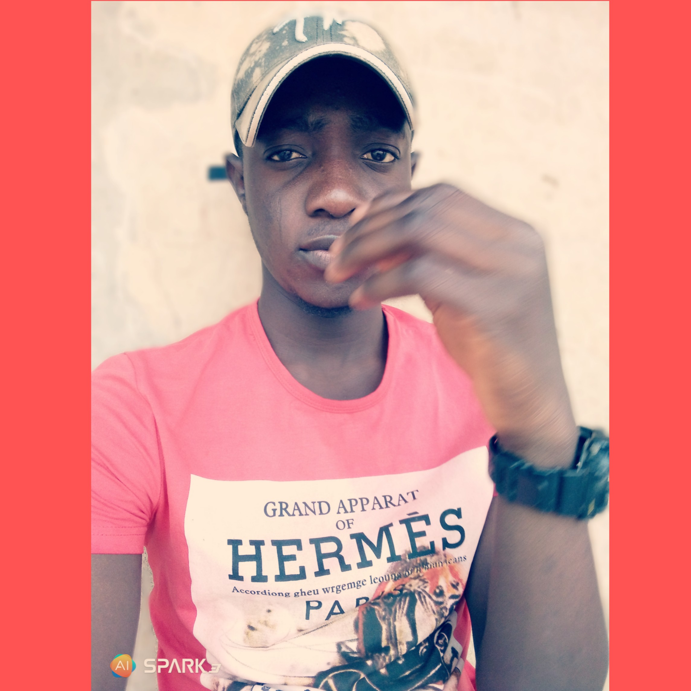

|  |
IBRAHIM H.YABAGI
Founder And admin Max Whatsapp Media
He's a cool guy and a easy going dude. Cool to be with at all times.
He literally doesnt tolerate rubbish and he loves making people laugh..
He is an indigine of lokoja,Kogi state.
This tribute page is just for practice and nothing special.
So here's a lil advice for aspiring programmers. "Do not panic even when everything seems blurry,just give it more effort and it'll become clearer".
|